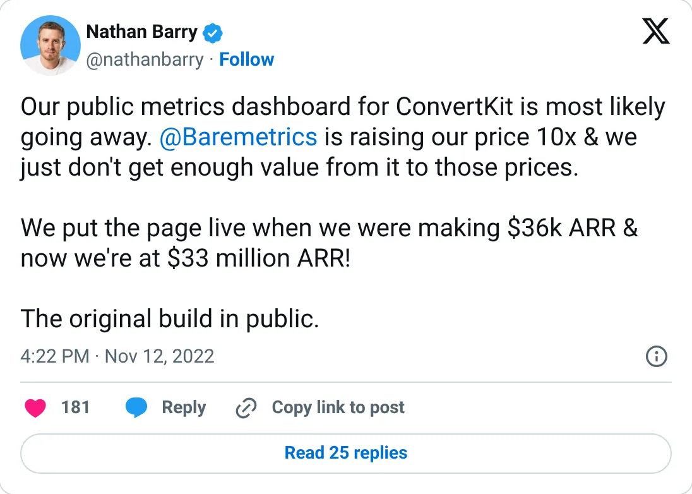
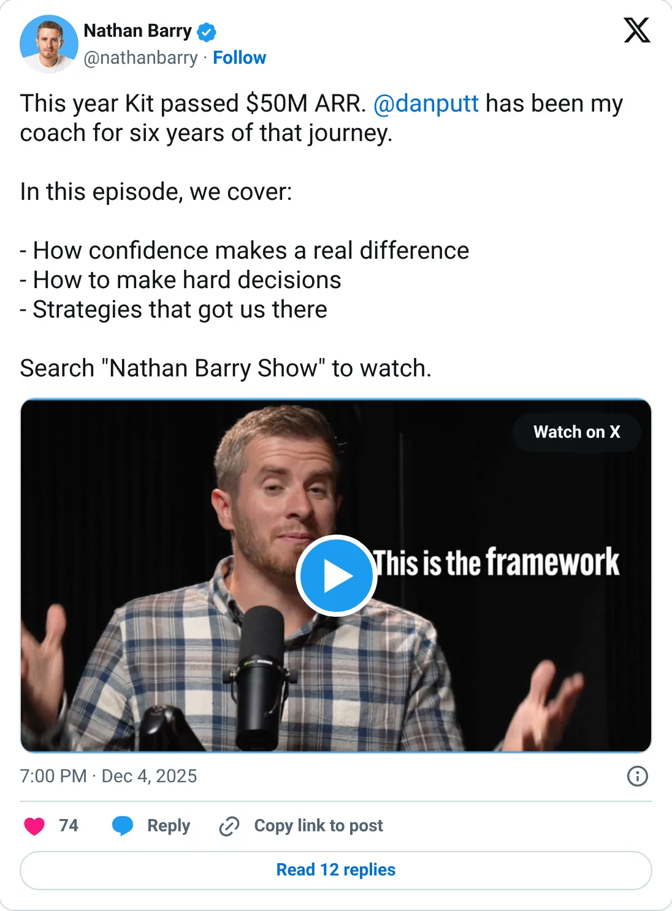

Real, don't clone
Kit (ConvertKit)
Email for creators. Real, and twelve years taken.
$50M+ ARR (2025)
Should you build this
Kit is email marketing for creators, in public since the early days, from $33M ARR to $40M to $50M+. The curve is slow and the company is real. It is also finished as a thing you clone. Use it as proof that a boring workflow, held for a decade, becomes a large company. Don't start ConvertKit.
Cited from the captured posts, shown below: the earliest captured post (Nov 12, 2022) is the source for “$33M ARR (dashboard went public at $36K ARR)”; the latest milestone (Dec 4, 2025) is the source for “Passed $50M ARR this year”.
Posts this is based on

$33M ARR (dashboard went public at $36K ARR)
Open on X

Passed $50M ARR this year
Open on X
What the product is
Email marketing platform for creators (newsletters, automations, paid subscriptions). Started solo in 2013, bootstrapped.